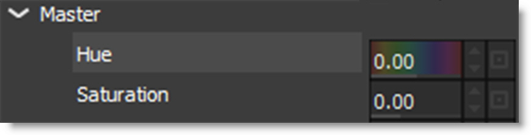
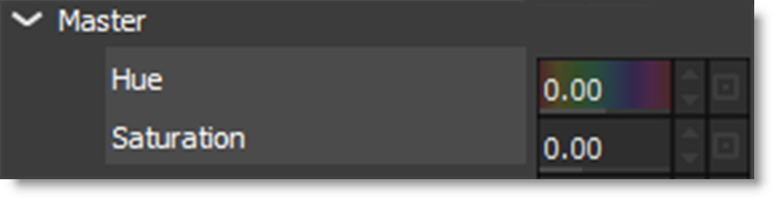

Creating Variations
Variations based on either one or two parameters can be created and are displayed as thumbnails in a window below the Parameters and Presets window.
1 Apply a filter.
2 Click on a parameter name in the Parameters window.
Variable parameters are Ranges, Toggles, and Colors.
When you select a parameter, the Variations appear and you'll see the variations being generated on that parameter.
3 Click on a second parameter and it will generate variations between the two.
The first parameter you click on will be the dominant parameter - it'll go across the top of the Variations tab. So, you can get different results depending on the order you select the parameters.
4 Click on a selected parameter to toggle it back off again.
Note: You can only have one or two parameters selected at a time. If you click on a third parameter, the last parameter you clicked on will deselect itself. If you deselect both of the parameters or switch effects, the Variations window will disappear because the variations are no longer being generated.
Variations are generated based on the current effect parameters. So, you can pick some parameters for your variation, then go back to the Presets window and pick a different Preset, and the variations will regenerate.
See Variations for more information.